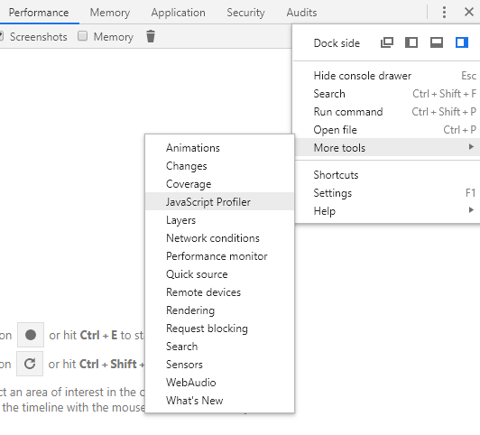
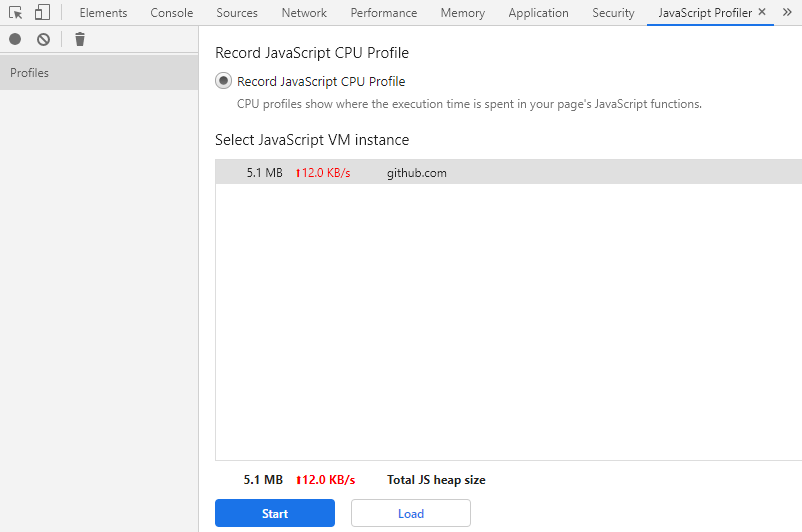
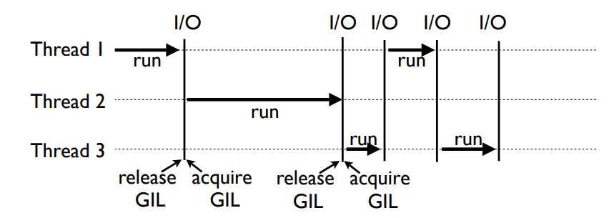
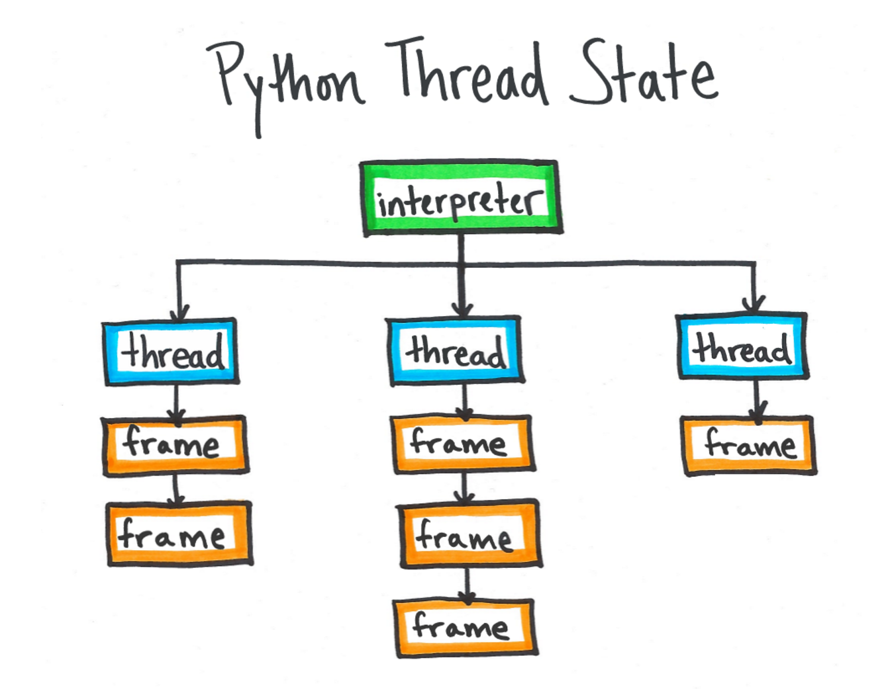

이 문서는 실행 중인 Python 어플리케이션을 프로파일링하기 위한 Pyflame에 대해 설명한다. 먼저 Pyframe을 이용한 프로파일링을 실습해보고, Pyflame의 동작 방식에 대해 알아보도록 한다.
Deterministic/Statistical 프로파일링
코드 내의 모든 함수 호출/반환, 예외 발생과 같은 이벤트를 추적하여 기록하는 것을 deterministic 프로파일링이라고 한다. 대표적으로 Python에 내장된 profile, cProfile 모듈이 있다. 이러한 방식의 프로파일링은 모든 이벤트를 추적하기 때문에 정확한 결과를 얻을 수 있다는 장점이 있지만, 코드 내 모든 진행을 추적하기 위한 프로브 코드를 삽입하기 때문에 높은 오버헤드를 가지므로 절대 시간 분석에는 유용하지 않다. 또한 프로브 코드를 삽입할 수 없다면 전체 호출 스택을 기록할 수 없어 관찰할 수 있는 범위가 제한된다. 추적 기능을 활성화하기 위해 코드 수정이 필요하거나 실행 중인 프로세스를 관찰할 수 없다는 것이 단점이다.
이와 반대로 샘플링을 통한 프로파일링 방식을 statistical 프로파일링이라고 한다. 보통 일정한 간격으로 대상 프로세스를 멈추고 호출 스택을 기록하게 된다. 이러한 방식은 deterministic 방식처럼 모든 이벤트들을 관찰할 수는 없지만, 샘플링 주기를 조절하여 프로파일링에 드는 오버헤드를 줄일 수 있다. 그래서 좀 덜 정확한 데이터를 낮은 오버헤드를 통해 얻을 수 있게 되는 것이다. 이러한 방식의 프로파일러로는 대표적으로 Uber에서 개발한 pyflame이 있다.
특히 Pyflame은 코드 수정 없이 실행 중인 프로세스를 추적할 수 있도록 개발되었다. 이는 Unix 호환 시스템에서 제공하는 ptrace 시스템 콜에 의해서 가능한 것이다. 이 ptrace 시스템 콜은 특정 프로세스의 가상 메모리 영역을 읽을 수 있다. 이 ptrace 시스템 콜을 통해 어떻게 동작하는지에 대해서는 구체적으로 나중에 알아보도록 하고 우선 간단히 사용 방법에 대해서 알아보자.
사용 방법
Pyflame은 직접 소스 코드로부터 빌드해서 사용해야 한다. 먼저 빌드에 필요한 패키지들을 설치하자. 여기서는 Ubuntu/Debian 배포판을 기준으로 설명한다.
sudo apt-get install autoconf autotools-dev g++ pkg-config python-dev
다음 소스 코드를 내려받아 빌드한다.
git clone https://github.com/uber-archive/pyflame
cd pyflame
./autogen.sh
./configure
make
make install
이러면 src 디렉토리 밑에 pyflame 바이너리가 생성된다. 이제 실제 프로세스를 프로파일링 해보자.
Pyflame를 사용하여 Python 프로세스를 프로파일링하기 위해서는 대상 프로세스의 pid를 지정해줘야 한다.
pyflame -p PID
이렇게 실행하면 기본값으로 1초 동안 1ms 간격으로 샘플링을 한다. 샘플링 간격 및 주기를 조정하기 위해서는 다음과 같이 추가 옵션을 준다.
pyflame -s 60 -r 0.01 -p PID
-s옵션은 샘플링 간격을 의미하고, -r옵션은 샘플링 주기를 의미한다. 둘 다 단위는 초(s)이다.
실행하면 프로파일링 분석 결과가 화면에 출력된다. 파일에 기록하기 위해서는 -o옵션을 사용해 출력 파일을 지정한다.
pyflame -s 60 -r 0.01 -p PID -o pyflame.out
분석 결과는 샘플링 기간 동안 실행되었던 코드 이력을 Flame Graph 형태로 나타낸다. 출력 결과를 Flame Graph로 변환해서 보려면 다음과 같이 실행한다.
git clone https://github.com/brendangregg/FlameGraph
cd FlameGraph
flamegraph.pl < pyflame.out > GRAPH.svg
Flame Graph는 기본적으로 시간 정보를 포함하지 않기 때문에 변환 결과에도 timestamp가 포함되지 않는다. 또한 출력되는 그래프가 SVG 벡터 이미지이기 때문에 상세히 살펴보기에도 어려움이 있다. 보다 편하게 볼 수 있도록 Flame Chart 형태로 출력한 뒤 Chrome을 통해서 볼 수 있도록 하자.
pyflame -flamechart -s 60 -r 0.01 -p PID -o pyflame.out
cat pyflame.out | flame-chart-json > flame_chart.cpuprofile
Chrome 개발자 도구를 실행하여 메뉴 탭을 연 후 More tools > JavaScript Profiler를 실행하면 새 메뉴가 나타난다.

이 창에서 Load 버튼을 클릭하여 변환한 cpuprofile 파일을 열면 Flame Chart를 확인 할 수 있다.

Pyflame 동작
Pyflame은 앞 서 언급한 ptrace 시스템콜을 통해 프로세스 정보를 알아온다. 이 ptrace 을 통해 Python 프로세스를 프로파일링을 하는 기본 동작은 다음과 같다.
- 주기적으로 대상 프로세스에 ‘attach’ 한다.
- 대상 프로세스의 가상 메모리 영역을 읽어서 호출 스택을 얻어온다.
- 프로세스에서 ‘detach’ 한다.
매우 간단해 보이지만 중요한 것은 메모리 영역을 읽어서 Python 호출 스택을 재구성해내는 것은 간단하지 않다. 이 과정을 이해하기 위해서는 먼저 Python 인터프리터(특히 CPython)의 동작을 이해할 필요가 있다.
Python은 Global Interpreter Lock(GIL)의 존재로 인해 하나의 프로세스에서는 오직 하나의 스레드만 실행할 수 있다. 이러한 구조에서 여러 스레드는 다음 그림과 같이 실행된다.

즉 모든 스레드가 실행되기 위해서는 GIL을 획득해야 하고, 실행이 종료되거나 IO 작업을 대기하는 경우 GIL을 반환하고 다른 스레드로 실행 흐름을 넘겨준다. 현재 실행 중인 스레드의 정보는 CPyhon인터프리터의 전역 변수인 _PyThreadState_Current에 저장되고 이를 통해 현재 스레드의 Frame 객체들을 얻어올 수 있게 된다. Python의 Frame 객체는 실행 프레임을 나타내는 것으로서 함수 호출시 내부적으로 생성된다. 각 Frame 객체는 현재 실행 중인 Python 소스 코드 파일 이름, 함수 이름, 코드 줄 수를 저장하고 있다. 이 Frame은 호출 순서대로 연결 리스트를 이루게 되므로, Frame 객체를 읽어서 호출 스택을 재구성 할 수 있게 되는 것이다.

그럼 _PyThreadState_Current는 어떻게 알아올 수 있는가? 이 것은 Linux의 proc 파일 시스템을 통해 가능하다. /proc/PID/exe는 프로세스 ID가 PID인 프로세스의 executable 바이너리의 심볼릭 링크이다. 이 파일은 Executable and Linkable Format (ELF) 포맷으로 되어 있다.
$ ls -l /proc/25871/exe
lrwxrwxrwx 1 nova nova 0 Dec 30 06:41 /proc/25871/exe -> /usr/bin/python2.7
$ hexdump -n 16 /proc/25871/exe
0000000 457f 464c 0102 0001 0000 0000 0000 0000
위의 예제는 실제 Python 어플리케이션의 exe 파일 정보를 나타낸 것이다. 당연한 말이겠지만 Python 어플리케이션의 exe파일은 기본적으로 Python 인터프리터를 가리키고 있다.
Pyflame 개발자들은 바로 이 exe파일로 부터 _PyThreadState_Current를 얻어내기로 하였다. ELF 바이너리로부터 전역변수(정확히는 변수의 주소)를 얻어오려면 심볼 테이블을 뒤져야 한다. 이 심볼테이블은 ELF의 .symtab 또는 .dynsym 섹션에 있다. 이 섹션들은 각각 정적 또는 동적인 심볼의 정보를 갖고 있다.
$ readelf -S /proc/25871/exe
There are 28 section headers, starting at offset 0x377868:
Section Headers:
[Nr] Name Type Address Offset
Size EntSize Flags Link Info Align
[ 0] NULL 0000000000000000 00000000
0000000000000000 0000000000000000 0 0 0
[ 1] .interp PROGBITS 0000000000000238 00000238
000000000000001c 0000000000000000 A 0 0 1
[ 2] .note.ABI-tag NOTE 0000000000000254 00000254
0000000000000020 0000000000000000 A 0 0 4
[ 3] .note.gnu.build-i NOTE 0000000000000274 00000274
0000000000000024 0000000000000000 A 0 0 4
[ 4] .gnu.hash GNU_HASH 0000000000000298 00000298
00000000000028e8 0000000000000000 A 5 0 8
[ 5] .dynsym DYNSYM 0000000000002b80 00002b80
0000000000009db0 0000000000000018 A 6 1 8
[ 6] .dynstr STRTAB 000000000000c930 0000c930
0000000000006dcb 0000000000000000 A 0 0 1
앞서 예제의 섹션 정보를 나타낸 것이다. 위의 정보에서 .dynsym, .dynstr 섹션 주소를 확인할 수 있다. 이 섹션들은 아래 구조체의 배열로 표현되며, 이 배열의 원소는 각각 심볼 하나를 의미한다.
struct Elf64_Sym {
Elf64_Word st_name;
unsigned char st_info;
unsigned char st_other;
Elf64_Half st_shndx;
Elf64_Addr st_value;
Elf64_Xword st_size;
};
위 구조체는 Linux의 ELF 포맷의 심볼 테이블 엔트리를 나타내는 구조체이다. 코드에 있는 st_name 필드는 사실 문자열이 아니라 .symstr 또는 .dynstr 섹션의 심볼 문자열 테이블 인덱스를 포함하고 있다. 따라서 Pyflame에서는 이 테이블들을 순회하며 _PyThreadState_Current을 찾는다. 이러한 과정은 readelf 명령어의 -s 옵션을 통해 심볼들을 확인하여 간단히 따라할 수 있다.
$ readelf -s /proc/25871/exe
Symbol table '.dynsym' contains 1682 entries:
Num: Value Size Type Bind Vis Ndx Name
...
896: 0000000000578650 8 OBJECT GLOBAL DEFAULT 25 _PyThreadState_Current
자 이제 _PyThreadState_Current을 찾아냈다. 이 변수는 사실 CPython의 Include/pystate.h에 정의되어 있는 PyThreadState 구조체의 배열이다. 이 배열을 읽어들여 Thread 정보를 가져온다.
/* Variable and macro for in-line access to current thread state */
PyAPI_DATA(PyThreadState *) _PyThreadState_Current;
...
typedef struct _ts {
struct _ts *next;
PyInterpreterState *interp;
...
struct _frame *frame;
long thread_id; /* Thread id where this tstate was created */
} PyThreadState;
우리가 주목할 구조체 멤버 변수는 frame이다. 바로 이 변수가 Frame 객체의 연결 리스트를 가리킨다. Frame 객체 구조체 정의는 Include/frameobject.h에 있으며 다음과 같다.
typedef struct _frame {
PyObject_VAR_HEAD
struct _frame *f_back; /* previous frame, or NULL */
PyCodeObject *f_code; /* code segment */
...
int f_lineno; /* Current line number */
...
} PyFrameObject;
PyCodeObject 구조체의 정의는 Include/code.h에 있다.
typedef struct {
...
PyObject *co_names; /* list of strings (names used) */
PyObject *co_varnames; /* tuple of strings (local variable names) */
...
PyObject *co_filename; /* unicode (where it was loaded from) */
PyObject *co_name; /* unicode (name, for reference) */
...
} PyCodeObject;
결국 각 PyFrameObject 구조체 변수들로부터 Code와 실행 중인 라인 번호를 얻어오게 된다. 이 Frame 들을 읽어들여서 전체 호출 스택을 구성할 수 있게되는 것이다.
총평
Python으로 작성된 웹서비스를 개발하는 입장에서 실행 중인 프로세스를 모니터링할 수 있는 방안을 오랫동안 찾아왔다. 그러다 우연하게 Pyframe을 접하게 되었고, 이를 통해 장애 상황에서 서비스의 문제점을 바로 찾아 해결하는 기분 좋은 경험을 하기도 했다. 개인적으로 이렇게 유용한 도구가 과연 어떻게 동작하는지 이해하고 싶었고 시간이 지났지만 지금에서라도 문서로 정리할 수 있어서 기쁘게 생각한다.
나에게 있어서 Uber는 단순히 택시 앱 회사에 불과했지만 이 Pyframe을 접하고 그들의 기술력에 경외감을 느낀다. 일반적으로 Python은 성능이 떨어진다고 알려져 있고 병목 구간은 다른 컴파일 언어 (보통 C/C++)로 재작성해서 대체하는 방식이 많이 알려져 있다. 우리도 Python의 떨어지는 성능을 으레 그렇거니 하면서 넘겼던 것이 사실이다. 그러나 Uber의 엔지니어는 새로운 프로파일링 도구를 만들어서 병목 구간을 분석하고 그 것을 극복하려는 노력을 해왔던 것 같다. 그들의 의지와 역량에 찬사를 보내며 이 글을 마친다.